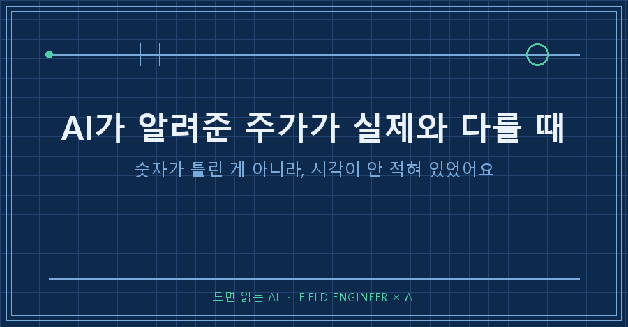
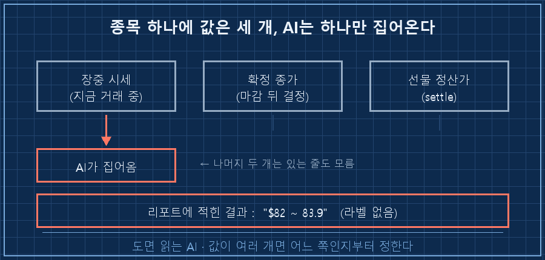
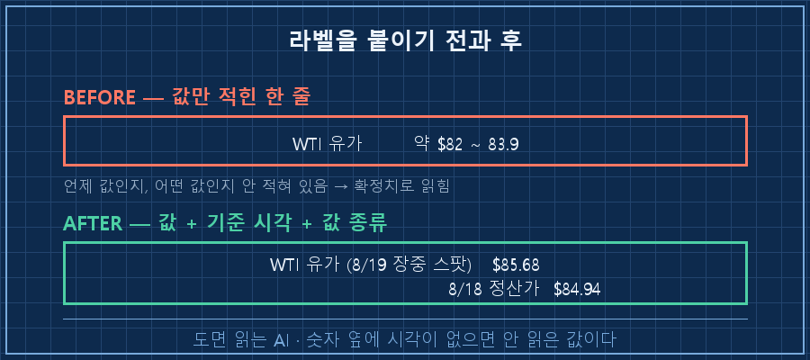
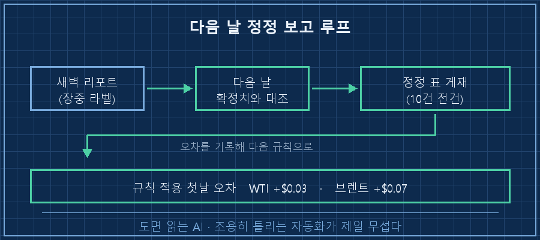

제 AI가 새벽마다 만들어두는 시장 리포트에 이런 줄이 실린 적이 있어요.
WTI 유가 약 $82 ~ 83.9그날 확정된 값은 $84.50이었습니다. 범위 안에 들어오지도 못했어요.
AI가 알려준 주가가 실제와 다르면 저는 한동안 출처부터 의심했어요. 이번엔 출처가 멀쩡했습니다.
원인은 하나의 종목에 값이 여러 개 동시에 돌아다닌다는 데 있어요. 지금 거래되는 시세, 그날 확정된 종가, 선물 정산가가 전부 다른 숫자입니다. AI는 그중 하나를 집어 오면서 어느 쪽인지를 안 적어요. 그래서 손볼 곳은 출처가 아니라 라벨입니다.
계측값 읽는 일로 열다섯 해를 보냈습니다. 이 바닥에선 숫자 옆에 시각을 안 적으면 그 값은 안 읽은 걸로 칩니다. 같은 계기라도 기동 직후 값과 안정화 뒤 값은 완전히 다른 이야기니까요.
그 습관을 정작 제 개인 공부용 리포트엔 안 붙여두고 있었어요..
2026년 8월 기준이고, 매일 새벽 AI가 웹을 뒤져 시장 요약을 한 장 만들어두는 구조입니다. 실시간으로 바뀌는 숫자를 AI한테 물어보는 상황이면 도구를 안 가리고 그대로 적용돼요.
1. 자동화 시각이 시장 마감보다 빨랐어요
리포트가 도는 시각이 미국 증시 마감 약 한 시간 전입니다.
그러니까 이 자동화는 확정 종가를 얻을 수가 없어요. 구조적으로요. 마감을 기다리게 하면 제가 아침에 읽을 리포트가 없어지고요.
문제는 AI가 그 값을 가져오면서 아무 표시 없이 종가 자리에 앉혀놨다는 겁니다. 읽는 사람은 확정된 숫자로 읽죠. 저도 그렇게 읽었고요.

유가에서 이게 제일 크게 벌어졌어요. 유가는 지금 거래되는 스팟 시세와 그날 정산된 선물 가격이 따로 돌아다닙니다. 제가 참조하게 둔 값들은 전부 스팟 쪽이었어요.
| 항목 | 리포트에 적힌 값 | 확정된 값 | 판정 |
|---|---|---|---|
| WTI | 약 $82 ~ 83.9 | $84.50 (정산가) | 범위 밖 |
| 브렌트 | 약 $89 ~ 90.3 | $90.87 (정산가) | 범위 밖 |
방향이 한쪽으로 쏠린 게 더 안 좋았습니다. 둘 다 실제보다 낮게 적혀 있었어요. 유가가 오르는 국면이었으니 리포트는 시장을 실제보다 온순하게 그려준 셈이죠.
숫자가 틀리는 것보다 한쪽으로만 틀리는 게 무섭습니다. 저는 그걸 매일 같은 방향으로 오해하게 되니까요.
2. 프롬프트에 값의 종류와 시각을 못 박았어요
고친 방법은 세 줄이 전부예요. 규약에 이렇게 넣었습니다.
- 유가는 '정산가(settle)' 기준으로 적는다.
- 마감 전 값을 쓸 때는 반드시 '장중'이라고 구분해 적는다.
- 확정 전 값은 다음 날 확정치와 대조해 정정 보고한다.첫 줄이 값의 종류, 둘째 줄이 기준 시각, 셋째 줄이 사후 처리예요.
"정확하게 알려줘"는 안 넣었습니다. 그건 부탁이지 규칙이 아니거든요. 반면 "장중이면 장중이라고 적어라"는 지켰는지 안 지켰는지가 눈에 보입니다.
실제 리포트 표기가 이렇게 바뀌었어요.
S&P500 (8/19 장중) 7,717.33
S&P500 (8/18 확정종가) 7,691.76
WTI 유가 (8/19 장중 스팟) $85.68 ← 8/18 정산 $84.94한 줄이 길어졌지만 이 편이 훨씬 편해요. 어제 것과 오늘 것이 붙어 있으니까요!

3. 다음 날 정정 보고를 의무로 만들었어요
라벨만으로는 부족했습니다. 장중치는 여전히 틀린 값이니까요.
그래서 다음 날 리포트 맨 앞에 어제 실은 미국 수치 전부를 확정치와 대조해 표로 싣게 했어요. 열 개 항목이면 열 개 전부요. 맞았든 틀렸든 빠짐없이요.
이 규칙을 넣고 첫날 나온 표가 이랬습니다.
| 항목 | 어제 게재 (장중) | 확정 | 차이 |
|---|---|---|---|
| WTI (정산가) | $84.91 | $84.94 | +$0.03 |
| 브렌트 (정산가) | $90.95 | 약 $91.02 | +$0.07 |
| 미 30년물 | 5.33% → 5.28~5.29% | 5.29% | 범위 안 |
며칠 전엔 범위째 빗나가던 값이 3~7센트로 붙었습니다! 값의 종류를 못 박은 것만으로요.
지수 쪽은 좀 더 움직였어요. 사상 최고 대비 낙폭이 장중 기준 -0.55%였다가 확정치로는 -0.69%가 됐습니다. 그래도 판정은 안 바뀌었고요.
정정의 목적은 판정을 뒤집는 게 아니라, 틀렸을 때 반드시 말하게 만드는 데 있어요. 자동화가 조용히 틀리기 시작하면 그때부터는 고칠 방법이 없습니다.
지금 이 정정 표는 사흘 연속 실리고 있어요. 오늘 것도 열 건 전부 대조해서 나왔습니다.

자주 나오는 질문 두 가지
Q. 확정 종가가 나온 뒤에 돌리면 되지 않나요?
그러면 제가 그 리포트를 안 읽게 되더라고요. 새벽에 만들어져 있으니까 아침에 보는 거예요. 자동화 시각은 제 생활에 맞추고, 정확도는 다음 날 대조로 회수하는 쪽을 택했습니다.
Q. 주가 말고 다른 숫자도 그런가요?
바뀌는 숫자면 다 그렇습니다. 환율은 매매기준율과 현찰 살 때 값이 다르고, 날씨는 예보와 실황이 다르잖아요. AI한테 "지금 얼마야"라고 물으면 검색에 제일 많이 걸린 값이 오고, 어느 쪽인지는 안 적어줍니다..
정리하면 손댄 건 세 가지예요. 값의 종류를 정하고, 확정 전이면 그렇다고 적게 하고, 다음 날 반드시 대조하게 한 것.
AI가 알려준 주가가 실제와 다를 때 저처럼 출처만 뒤지고 계시다면, 그 숫자 옆에 기준 시각이 적혀 있는지부터 한번 보세요. 여러분이 받아본 숫자엔 그게 적혀 있던가요?
규칙이 깨졌다가 붙은 자리는 makefield.ai에 날짜별로 남겨둡니다.
태그: #AI가알려준주가 #AI숫자오류 #장중가와종가 #AI리포트정정 #AI자동화검증 #AI팩트체크 #AI할루시네이션 #AI에이전트 #무인자동화 #파이썬자동화 #AI프롬프트작성법 #AI에게일시키기 #AI로일하기 #현장엔지니어 #도면읽는AI